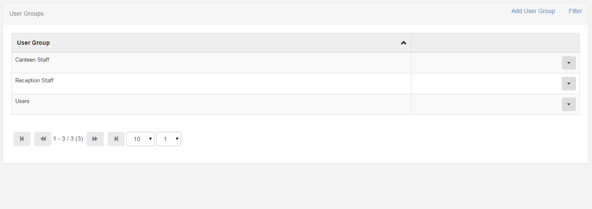

User Groups
Users can be assigned to one or more groups for sharing and collaboration. When new groups are added they are available for user assignment.
Groups are also used for access control

Adding, Editing and Deleting
Groups are a simple object that only require a unique Group Name.
When should a group be added?
A group should be added when there is a new set of components required for a particular group of users. It could be that certain users should only have access to certain components or that certain users shouldn't be able to share their media, layouts and schedules with each other.
Group Members
Each user account in the CMS can be assigned to one or more user groups. To manage the members of a particular user group, select the user groups action menu in the table and click the "Group Members" menu item. Once selected a form will open showing the membership information of that group.
Users that appear in the left hand column are already assigned to the selected group and users in the right hand column can be assigned.
Dragging or double clicking on the user will include or exclude them from the current group.